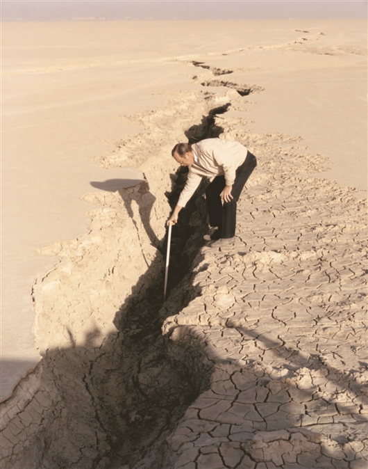
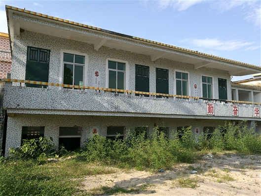
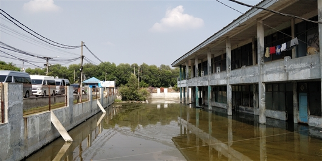

| 地面不可承受之“痛” |
| 2040年地面沉降将威胁全球近1/5人口 |
与地震、海啸、滑坡等剧烈的地质灾害相比，地面沉降要“温和”的多，它的刻度往往以毫米、厘米表示，在“水滴石穿”的累积中，带来地面开裂、高楼倒塌、海水倒灌等不可逆的危害。恰恰因为它的缓慢，不常引起人们的关注。
近日，一项由联合国教科文组织地面沉降工作组组织的研究警告说，到2040年，地面沉降将威胁全球近1/5的人口。该研究在线发表于《科学》。
“本次研究绘制了全球地面沉降分布图，并创建了一个模型，可预测局部地区的沉降风险。研究发现，地面沉降风险最大的国家、地区集中在亚洲。”该论文的作者之一、南京大学地球科学与工程学院教授叶淑君说。
“痛”从何来
地面沉降是由地下固体或流体开采引起的地面下沉现象，它是一种缓慢而渐进的地质灾害。如果给地面沉降的人为原因排个序，超采地下水毫无疑问排第一，此外还有石油、天然气、固体矿产开采等。
叶淑君介绍，地下水是指埋藏在地表以下的水体，开采后水位下降，导致储存地下水的含水层系统（由砂土或粘土等介质组成）压缩，地面下沉；停止或减少开采，含水层系统受雨水、地表水、地下水等补给后，水位恢复，介质回弹，地面抬升。
如果长期过量开采地下水，超过了含水介质的压缩和回弹范围，含水层就像被抽干了水分的皮肤，干瘪、皲裂、毫无弹性，这是其不可承受之“痛”，很容易发生地面沉降、出现地裂缝等。

1991年，美国加利福尼亚州羚羊谷罗杰斯（干）湖表面形成的地裂缝。
图源自美国地质调查局
“像上海、天津等滨海城市，由于长期滨海相沉积，其地下松散沉积层达几百米厚，有大量软土层，压缩性较大，地表的建筑、设施就像处在一张水分充盈的弹簧垫上，一旦地下水开采过度，发生沉降，就会加剧海平面上升、引发海水倒灌风险。”叶淑君说。
城市发展早期，人们对水资源认识有限，再加上地下水量大质优、易于开采，地下水损耗严重。
自本世纪初，中国各省市陆续采取缓解措施。京津冀地区通过南水北调解决工业、生活用水，预计减少30%的地下水开采量，同时，用于农业灌溉的地下水开采量压缩至最小；上海于2013年起实施《地面沉降防治管理条例》，目前控制其平均速率不超过6毫米/年，人工回灌自来水约2000万立方米/年；江苏省于2000年全面禁采地下水，目前地面水位最低点回升达80米。

珠海市一栋正在下沉的教学楼。图源自中国地质调查局
持续沉降
文献研究显示，在过去的一个世纪里，有34个国家的200个地点发生了由于地下水枯竭引起的地面沉降。但事实上，发生沉降的远不止这些地区，估计是其数目的三倍。“目前的研究大多集中在描述沉降的地质背景、主要特征及控制机理等方面，对沉降的危害及防治措施等研究比较缺乏。”该论文的第一作者、西班牙地质与矿业研究所教授Gerardo Herrera García告诉《中国科学报》。
本文在各国公开数据的基础上建立了全球地面沉降数据库，并绘制分布图。数据显示，印度尼西亚首都雅加达的海岸沉降非常严重，每年沉降28厘米，目前海边的房屋建筑已经处在海平面以下，并发生开裂，政府正计划将首都迁往婆罗洲岛。

印度尼西亚雅加达北部的一栋房子，由于地下水抽取导致地面沉降，房子被永久淹没。
Pietro Teatini摄于2019.9.20
实地考察走访后，叶淑君发现，当地每年都加高海堤来阻挡海水倒灌，目前海堤已有2层楼高。“他们认为，这是由于全球变暖引起的海平面升高，是不可抗力，而非可人为调节的地下水超采。”她说。
而对全球的研究表明，沿海地区的海平面上升，是绝对海平面上升和地面沉降共同导致的，后者的贡献可能是前者的10倍甚至更多。
此外，文章还提到，伊朗部分城市正以25厘米/年的速度下沉；荷兰1/4的国土面积低于海平面；意大利波河平原的沉降始于20世纪下半叶，目前威胁其30%的人口；在过去的1个世纪，从美国加州中央山谷到大西洋和墨西哥湾沿岸平原地区沉降量达9米。
亟待恢复
在空间分析的基础上，结合岩性、地表坡度、土地覆盖和柯本（Koppen-Geiger）气候分类等级等，Gerardo等提出了一个全球模型，能够预测1平方千米空间分辨率下的地面沉降风险。
根据模型预测结果，占全球8%、1200万平方公里的陆地表面，可能发生地面沉降的概率大于50%。这些潜在沉降区集中分布在密集的城市和灌溉区域附近、沿海和河流三角洲地区、部分城市的内陆沉积盆地。
结合未来全球用水压力、气候和人口变化等，作者预测2040年全球潜在沉降面积增加7%，影响16亿居民，其中6.35亿人将生活在洪水易发地区。
本文的作者之一、上海市地质调查研究院教授级高级工程师王寒梅告诉《中国科学报》，地面沉降是个与人类活动密切相关的、全球性问题。“从中国的防治经验来看，政府重视是防治工作取得成效的重要保障。因此，研究希望通过全球一张图的形式，引起各国的重视。”
叶淑君表示，可采取多种措施恢复沉降区域的地下水位，如压缩地下水开采量、利用地表水代替地下水、人工回灌、自然河流补给等。
“尽管地面沉降不会直接威胁生命，但对基础设施、建筑物等影响巨大。政策制定者只需在可能发生地面沉降的地区进行局部研究，并引入地下水监管措施，就可以在未来几十年防止或减轻这一危害的影响。”Gerardo说。
Gerardo还表示，卫星雷达干涉测量可以很好地量化地面沉降的大小和强度、及时确定含水层系统中沉积层的厚度、真实的地下水位演变情况等，希望各国研究者能共同合作，利用这种方法进行准确预测，这至关重要。（来源：中国科学报 刘如楠）
相关论文信息：https://doi.org/10.1126/science.abb8549